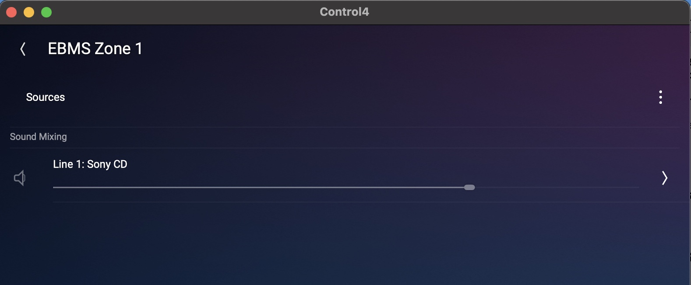
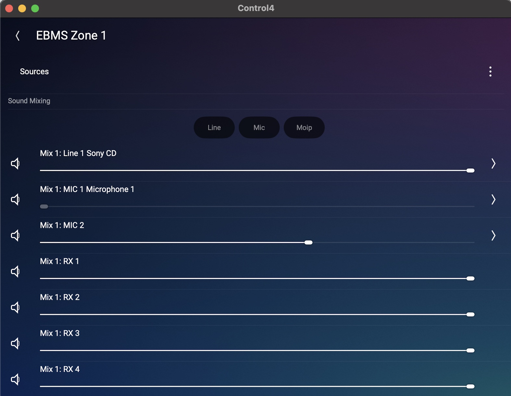

License, Copyright, and Trademark
The content contained in this repository is the intellectual property of Snap One, LLC, (formerly known as Wirepath Home Systems, LLC), and use without a valid license from Snap One is strictly prohibited. The user of this repository shall keep all content contained herein confidential and shall protect this content in whole or in part from disclosure to any and all third parties except as specifically authorized in writing by Snap One.
License and Intellectual Property Disclaimer
The content in this repository is provided in connection with Snap One products. No license, express or implied, by estoppal or otherwise, to any intellectual property rights is granted by this document or in this repository. Except as provided in Snap Oneʼs terms and conditions for the license of such products, Snap One and its affiliates assume no liability whatsoever and disclaim any express or implied warranty, relating to the sale and/or use of Snap One products including liability or warranties relating to fitness for a particular purpose, merchantability, or infringement of any patent, copyright or other intellectual property right. Snap One products are not intended for use in medical, lifesaving, or life sustaining applications.
Information regarding third-party products is provided solely for educational purposes. Snap One is not responsible for the performance or support of third-party products and does not make any representations or warranties whatsoever regarding the quality, reliability, functionality or compatibility of these products. The reader is advised that third parties can have intellectual property rights that can be relevant to this repository and the technologies discussed herein, and is advised to seek the advice of competent legal counsel regarding the intellectual property rights of third parties, without obligation of Snap One.
Snap One retains the right make changes to this repository or related product specifications and descriptions in this repository, at any time, without notice. Snap One makes no warranty for the use of this repository and assumes no responsibility for any errors that can appear in the repository nor does it make a commitment to update the content contained herein.
Copyright
Copyright 2025 Snap One, LLC. All rights reserved.
The above copyright notice applies to all content in this repository unless otherwise stated explicitly herein that a third-party’s copyright applies.
No part of this publication may be reproduced, photocopied, stored on a retrieval system, or transmitted without the express written consent of the publisher.
Trademarks
Snap One and Snap One Logo, Control4 and the Control4 logo, and DriverWorks are trademarks or registered trademarks of Snap One, LLC. Other product and company names mentioned in this repository may be the trademarks or registered trademarks of their respective owners.
Derivative Works
To the extent that you create any “Derivative Work” (meaning any work that is based upon one or more preexisting versions of the work provided to you in this repository, such as an enhancement or modification, revision, translation, abridgement, condensation, expansion, collection, compilation or any other form in which such preexisting works may be recast, modified, transformed or adapted, explicitly including without limitation, any updates or changes to Snap One, LLC’s software code or intellectual property) such Derivative Work shall be owned by Snap One, LLC and all right, title and interest in and to each such Derivative Work shall automatically vest in Snap One, LLC. To the extent any Derivative Work does not automatically vest in Snap One, LLC by operation of law, you hereby assign such Derivative Work to Snap One, LLC with full title guarantee. Snap One, LLC shall have no obligation to grant you any right in any such Derivative Work.
Contact Us
Snap One, LLC 11734 S. Election Road Salt Lake City, UT 84020 USA
What’s New
What’s New in 4.1.0
The Mixer proxy was delivered in conjunction with Operating System 4.1.0.
Introduction
Mixer Proxy
Note: The Mixer Proxy is the first Lua Proxy delivered by Control4. The architecture used to develop this proxy is not currently available to third party developers. Furthermore, drivers developed using the Lua Proxy methodology lack a user interface which is typically provided for a driver written using Control4’s traditional, non-Lua proxies. Control4 is not in a position to provide user interfaces for third party drivers written using a Lua proxy.
The Mixer proxy is intended to be used in conjunction with the AV Switch proxy. The AV Switch proxy handles all the typical AV Switch functions such as input/output selection, room/zone volume control, etc. The Mixer proxy extends this functionality to support Mixer channel volume/mute control as well as Digital Signal Processing (DSP).
In addition to the normal AV Switch constructs of Inputs, Outputs and Selected Source the Mixer proxy adds Channels, Zones and Mixes. Channels also support advanced DSP signal processing including EQ, Compression, De-Essing and Noise Gate.
AV Pathing and Source selection are at the heart of most AV proxies and the Mixer proxy is no different. However, since the Mixer proxy is designed to extend the AV Switch proxy, some of these lines do get blurred. For example, a CD player bound to an input of the protocol driver is part of the AV Switch pathing logic but it is also a channel of the Mixer and as such can be part of a Mix.
Furthermore, it may be desired to start an audio session by just selecting a Mix of channels and not have a particular selected (controllable) source. Or the user may wish to select a single microphone (not controllable) as the selected source. To handle these use cases, No Control drivers have been created for both Microphone and Mix.
Since Mixes and Channels require different handling logic, the Mixer proxy must know if the selected source is a Channel or a Mix. To support this functionality, special mixId and channelId elements must be included in the appropriate Input Connections in the protocol driver. Using this modeling, the Proxy maintains a map of all connections with this data in the MIXER_CONNECTIONS table.
An important distinction (and possible source of confusion) is how the UI and Proxy handle Input Channel Volume. As in the case of actual mixer devices, an input channel has a level (volume) control which will affect the signal before any further modification of that channel in a mix. For example, if a device can create more than one mix, changing the input channel volume will affect the level of that channel in all mixes. Whereas changing the volume of that channel in a mix will only affect the level of that channel in that mix. While this is a straightforward concept, it does get clouded by Control4 source selection and control logic in conjunction with the fact that the mixer proxy is the first AV Proxy that handles volume control of an input (Room volume control adjusts the volume of an output/zone in a device). To simplify user interaction, it has been decided that, from a Control4 perspective, Input Channel Level will be a configuration element and not supported via the Control4 UI. So, when a Source is selected, the level control is visible but grayed out and not available for modification. When a Mix is selected, all Channels are available for modification in that Mix.
Channel Selected 
Mix Selected 
Note that the driver development efforts are supported with a Mixer Proxy Driver Development Template. The mixer_proxy.zip file containing the template and a README instructional document can be found here: https://github.com/snap-one/docs-driverworks-proxyprotocol-mixer/tree/main/source/images
Minimum Requirements
- Composer Pro: 4.1.0
- Director version: 4.0.0
Mixer Proxy Commands
SET_CHANNEL
Sets any element that is declared in the JSON Channel structure. The parameter 'id' is required, the other parameters dictate the element to be set.
Name
SET_CHANNEL (param: String)
| Parameter | Type | Description |
|---|---|---|
| param | STRING | JSON String |
Example
In this example, the EQ for Channel 1 is being disabled.
SET_CHANNEL({param = '{"RoomId":7856,"eq":{"enabled":false},"id":1}}')
SET_ROUTING
Routes a Channel or a Mix to a Zone.
Name
SET_ROUTING ({ZONE_ID: Int, CHANNEL_ID: Int})
| Parameter | Type | Description |
|---|---|---|
| zoneId | INT | ID value of the zone. |
| channelId | INT | ID value of the channel. |
Example
In this example, the Channel 1 is Routed to Zone 1.
SET_ROUTING ({ZONE_ID = 1, CHANNEL_ID = 1})
SET_CHANNEL_INPUT_LEVEL
Sets the Input Level for a Channel.
Name
SET_CHANNEL_INPUT_LEVEL (roomId: Long, channelId: Int, level: Int)
| Parameter | Type | Description |
|---|---|---|
| roomId | Long | ID value of the room. |
| channeld | INT | ID value of the channel. |
| level | INT | Level value. |
SET_CHANNEL_MUTED
Sets Mute for a Channel.
Name
SET_CHANNEL_MUTED(roomId: Long, channelId: Int, muted: Boolean)
| Parameter | Type | Description |
|---|---|---|
| roomId | Long | ID value of the room. |
| channeld | INT | ID value of the channel. |
| muted | Bool | Mute state (t/f). |
SET_EQ_ENABLED
Enable/Disable EQ for a Channel.
Name
SET_EQ_ENABLED(roomId: Long, channelId: Int, enabled: Boolean)
| Parameter | Type | Description |
|---|---|---|
| roomId | Long | ID value of the room. |
| channeld | INT | ID value of the channel. |
| enabled | Bool | EQ enabled state (t/f). |
Example
SET_EQ_ENABLED({enabled = True, channelId = 2, roomId: 7977})
SET_COMPRESSOR_ENABLED
Enable/Disable Compressor for a Channel.
Name
SET_COMPRESSOR_ENABLED(roomId: Long, channelId: Int, enabled: Boolean)
| Parameter | Type | Description |
|---|---|---|
| roomId | Long | ID value of the room. |
| channeld | INT | ID value of the channel. |
| enabled | Bool | Compressor enabled state (t/f). |
Example
SET_COMPRESSOR_ENABLED({enabled = True, channelId = 2, roomId: 7977})
SET_DE_ESSER_ENABLED
Enable/Disable De-Esser for a Channel.
Name
SET_DE_ESSER_ENABLED(roomId: Long, channelId: Int, enabled: Boolean)
| Parameter | Type | Description |
|---|---|---|
| roomId | Long | ID value of the room. |
| channeld | INT | ID value of the channel. |
| enabled | Bool | De-esser enabled state (t/f). |
Example
SET_DE_ESSER_ENABLED({enabled = True, channelId = 2, roomId: 7977})
SET_NOISE_GATE_ENABLED
Enable/Disable Noise Gate for a Channel.
Name
SET_NOISE_GATE_ENABLED (roomId: Long, channelId: Int, enabled: Boolean)
| Parameter | Type | Description |
|---|---|---|
| roomId | Long | ID value of the room. |
| channeld | INT | ID value of the channel. |
| enabled | Bool | Noise Gate enabled state (t/f). |
Example
SET_NOISE_GATE_ENABLED({enabled = True, channelId = 2, roomId: 7977})
SET_EQ_BAND_ENABLED
Enable/Disable an EQ Band for a Channel.
Name
SET_EQ_BAND_ENABLED(roomId: Long, channelId: Int, bandId: Int, enabled: Boolean)
| Parameter | Type | Description |
|---|---|---|
| roomId | Long | ID value of the room. |
| channeld | INT | ID value of the channel. |
| bandId | INT | ID value of the EQ band. |
| enabled | Bool | EQ Band enabled state (t/f). |
Example
SET_EQ_BAND_ENABLED({channelId = 2, bandId = 1, enabled = True, roomId: 7977})
SET_EQ_BAND_GAIN_LEVEL
Sets the EQ Band gain level for a Channel.
Name
SET_EQ_BAND_GAIN_LEVEL(roomId: Long, channelId: Int, bandId: Int, level: Float)
| Parameter | Type | Description |
|---|---|---|
| roomId | Long | ID value of the room. |
| channeld | INT | ID value of the channel. |
| bandId | INT | ID value of the EQ band. |
| level | Float | Gain Level value. |
Example
SET_EQ_BAND_GAIN_LEVEL({channelId = 2, bandId = 1, level = 3, roomId: 7977})
SET_EQ_BAND_Q_LEVEL
Sets the EQ Band Q for a Channel.
Name
SET_EQ_BAND_Q_LEVEL(roomId: Long, channelId: Int, bandId: Int, level: Float)
| Parameter | Type | Description |
|---|---|---|
| roomId | Long | ID value of the room. |
| channeld | INT | ID value of the channel. |
| bandId | INT | ID value of the EQ band. |
| level | Float | Q Level value. |
Example
SET_EQ_BAND_Q_LEVEL({channelId = 2, bandId = 1, level = 3, roomId: 7977})
SET_EQ_BAND_FRQUENCY
Sets the EQ Band Center Frequency for a Channel.
Name
SET_EQ_BAND_FREQUENCY(roomId: Long, channelId: Int, bandId: Int, frequency: Int)
| Parameter | Type | Description |
|---|---|---|
| roomId | Long | ID value of the room. |
| channeld | INT | ID value of the channel. |
| bandId | INT | ID value of the EQ band. |
| frequency | INT | Center frequency value. |
Example
SET_EQ_BAND_FREQUENCY({channelId = 2, bandId = 1, frequency = 200, roomId: 7977})
SET_COMPRESSOR_COMPONENT_VALUE
Sets the Value of a Compressor Element for a Channel.
Name
SET_COMPRESSOR_COMPONENT_VALUE(roomId: Long, channelId: Int, key: String, value: Float)
| Parameter | Type | Description |
|---|---|---|
| roomId | Long | ID value of the room. |
| channeld | INT | ID value of the channel. |
| key | STR | ID value of the key. |
| value | Float | Compressor Element value. |
Example
SET_COMPRESSOR_COMPONENT_VALUE({channelId = 2, key = 'threshold', value = -10, roomId: 7977})
SET_DE_ESSER_COMPONENT_VALUE
Sets the Value of a De-Esser Element for a Channel.
Name
SET_DE_ESSER_COMPONENT_VALUE(roomId: Long, channelId: Int, key: String, value: Float)
| Parameter | Type | Description |
|---|---|---|
| roomId | Long | ID value of the room. |
| channeld | INT | ID value of the channel. |
| key | STR | ID value of the key. |
| value | Float | De-esser Element value. |
Example
SET_DE_ESSER_COMPONENT_VALUE({channelId = 2, key = 'reduction', value = -5, roomId: 7977})
SET_NOISE_GATE_COMPONENT_VALUE
Sets the Value of a Noise Gate Element for a Channel.
Name
SET_NOISE_GATE_COMPONENT_VALUE(roomId: Long, channelId: Int, key: String, value: Float)
| Parameter | Type | Description |
|---|---|---|
| roomId | Long | ID value of the room. |
| channeld | INT | ID value of the channel. |
| key | STR | ID value of the key. |
| value | Float | Noise Gate Element value. |
Example
SET_NOISE_GATE_COMPONENT_VALUE({channelId = 2, key = 'release', value = 250, roomId: 7977})
Mixer Proxy Notifications
CHANNELS_INIT
Initializes MIXER_CHANNELS Structure.
Name
CHANNELS_INIT(MIXER_CHANNELS: Table)
| Parameter | Type | Description |
|---|---|---|
| Table | STR | Param table encoded as a JSON string param . |
ZONES_INIT
Initializes MIXER_ZONES Structure.
Name
ZONES_INIT(MIXER_ZONES: Table)
| Parameter | Type | Description |
|---|---|---|
| Table | STR | Param table encoded as a JSON string param . |
MIXES_INIT
Name
MIXES_INIT(MIXER_ZONES: Table)
| Parameter | Type | Description |
|---|---|---|
| Table | STR | Param table encoded as a JSON string param . |
MIXER_CONNECTIONS
Initializes MIXER_CONNECTIONS Structure.
Name
MIXER_CONNECTIONS_INIT(MIXER_ZONES: Table)
| Parameter | Type | Description |
|---|---|---|
| Table | STR | Param table encoded as a JSON string param of mixer zones. |
CHANNELS_CHANGED
Notification of the currently selected Channel or Mix.
Name
CHANNELS_CHANGED(MIXER_CHANNELS: Table)
| Parameter | Type | Description |
|---|---|---|
| Table | STR | Param table encoded as a JSON string param of mixer channels. |
CHANNEL_CHANGED
Notification of change in any Channel Parameter.
Name
CHANNEL_CHANGED(MIXER_CHANNEL: Table)
| Parameter | Type | Description |
|---|---|---|
| Table | STR | Param table encoded as a JSON string param of mixer channel. |
Example
In this example, Channel 1 Input Level has changed to -7.
{"RoomId":7977,"id":1,"input_level":{"value":-7}}
In this example, The Gain of Band 1 of the EQ in Channel 1 has changed to 7.9.
{"RoomId":7856,"eq":{"bands":[{"gain":{"value":7.9000000000000004},"id":1}]},"id":1}
ZONE_CHANGED
Notification of change in any Zone Parameter
Name
ZONE_CHANGED(MIXER_ZONE: Table)
| Parameter | Type | Description |
|---|---|---|
| Table | STR | Param table encoded as a JSON string param of a mixer zone. |
Example
In this example, Source 2 has been selected in Zone 1.
{"RoomId":7977,"id":1,"source":2,"sourceConnId":3002}
In this example, the Gain in Zone 1 has changed to -22.
{"RoomId":7977,"gain":-22,"id":1}
ZONE_SOURCE_CHANGED
ZONE SOURCE CHANGED
Notification of Channels with updated naming tags.
Name
ZONE_SOURCE_CHANGED(MIXER_CHANNELS: Table)
| Parameter | Type | Description |
|---|---|---|
| Table | STR | Param table encoded as a JSON string param of a mixer channels. |
Mixer Proxy Variables
ACTIVE_ROOMS
ACTIVE_ROOMS - a comma delimited list of current rooms in the path.
Mixer Proxy Connections
CHANNEL_CONNECTIONS
Channel Connections shall include a channelid (integer) element.
<connection proxybindingid="5001">
<id>3001</id>
<facing>1</facing>
<connectionname>Source 1</connectionname>
<type>6</type>
<consumer>True</consumer>
<audiosource>False</audiosource>
<videosource>False</videosource>
<linelevel>True</linelevel>
<channelid>1</channelid>
<classes>
<class>
<classname>STEREO</classname>
</class>
</classes>
</connection>
CHANNEL_CONNECTIONS
Mix Connections shall include a mixid (integer) element
<connection proxybindingid="5001">
<id>3017</id>
<facing>1</facing>
<connectionname>Mix 1</connectionname>
<type>6</type>
<consumer>True</consumer>
<audiosource>False</audiosource>
<videosource>False</videosource>
<linelevel>True</linelevel>
<mixid>1</mixid>
<classes>
<class>
<classname>STEREO</classname>
</class>
</classes>
</connection>